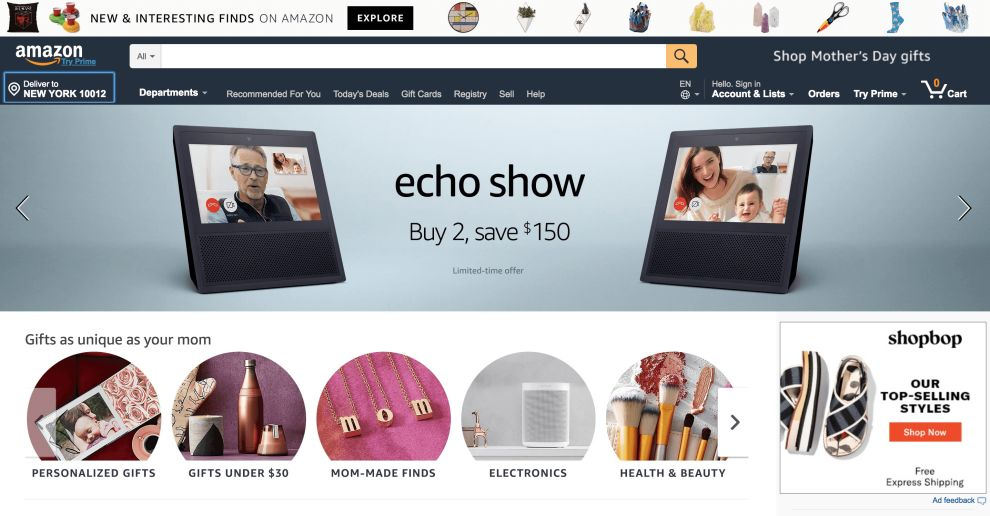
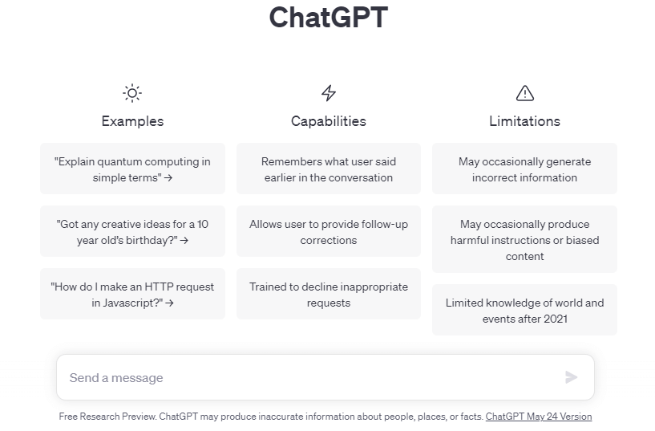

Saya seorang Web Developer yang sedang belajar HTML fundamental.
Saya tertarik pada dunia web development dan sedang fokus mempelajari HTML sebagai dasar sebelum lanjut ke CSS dan JavaScript.

Website Amazon

Website ChatGPT